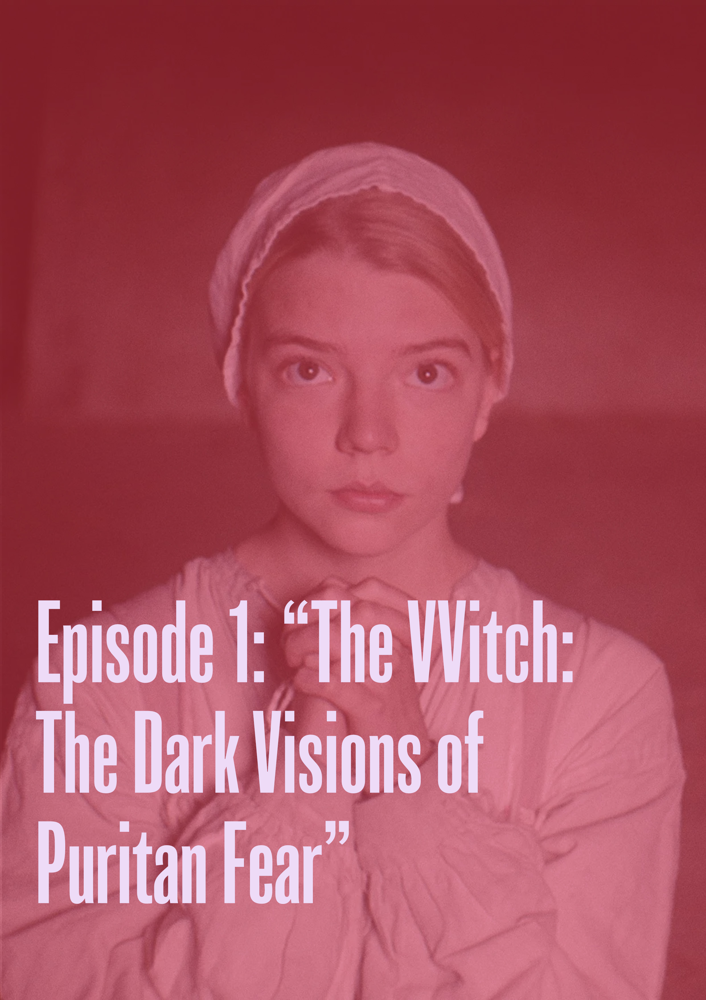

The cinematography of The Witch is bleak and oppressive, using natural lighting and muted tones to evoke the isolation and fear of 17th-century Puritan life. Special effects are minimal yet highly effective, especially the subtle supernatural elements like Black Phillip. The visual symbolism of the forest and animals plays on themes of religious hysteria and natures power over humanity.